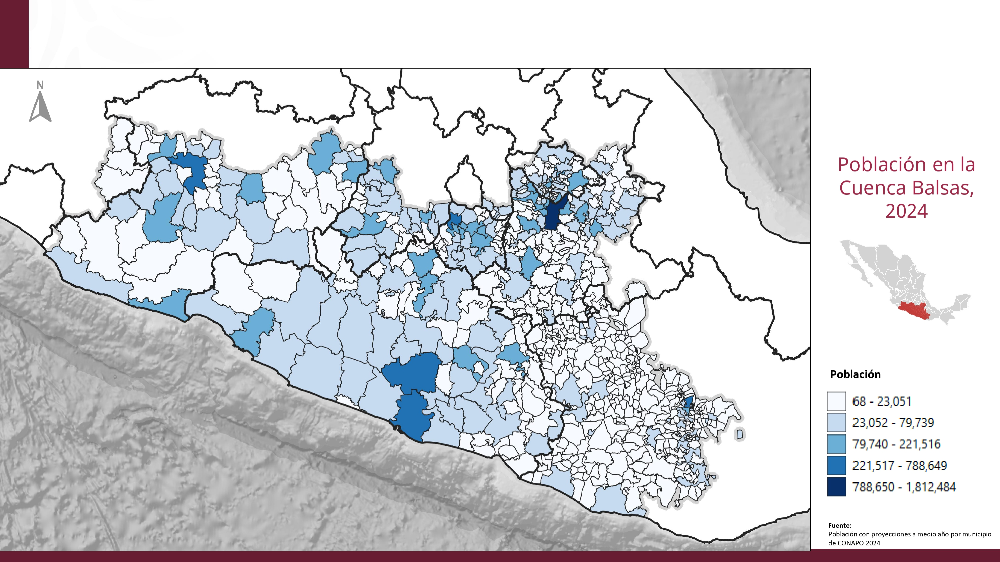
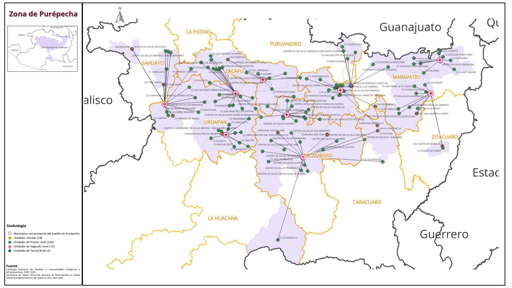

Horizontal
Vertical
Rotate
Cartografía histórica de México

Exploración y conquista del territorio
Rutas de expedición colonial

Demarcaciones y fronteras históricas
División territorial del virreinato
Geografía y recursos naturales
Poblaciones indígenas prehispánicas